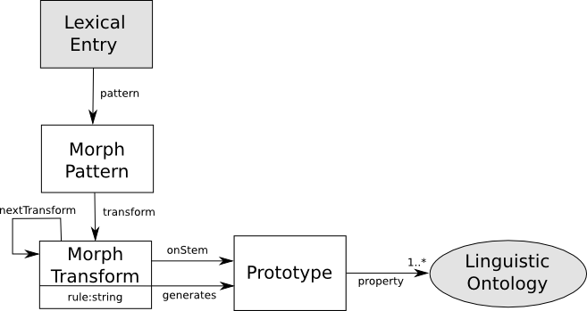

Next: Inflection Up: Modules Previous: Summary of vocabulary introduced Contents

The usual lemon method for representing different forms of the same lexical entry is to indicate all non-canonical forms by the use of the otherForm property. While this may be reasonably practical for English as there are only four, three and two forms for verbs, adjectives and nouns respectively, there can be many forms for items of more synthetic languages. For example, a regular verb in Italian, such as “amare”, has 43 distinct forms, and encoding all of these as seperate forms for every word would greatly increase the size of lexicon. This problem is even more acute for languages exhibiting polysynthesis, where multiple inflections may be combined. For example in Japanese the following (among other) inflections of the regular verb exist (here “taberu”, to eat) .
| Positive | Negative | |
| Present | taberu | tabenai |
| Past | tabeta | tabenakatta |
The same verb also can be inflected to give a passive form, “taberareru”, and a causative form, “tabesaseru”11. These forms are in fact verbs, that have the same inflections as the regular verb. To further complicate things, both the passive and causative may be combined to give a passive-causative form “tabesaserareru”. As such the following form of the verb exists, which may be decomposed as follows (the meaning is “(he) was not made to eat”).
| tabe | - | sase | - | rare | - | naka | - | tta |
| tabe | saseru | rareru | nai | ta | ||||
| stem | causative | passive | negative | past |
|---|
This leads to a very large number of inflections and as such it is difficult to state how many word forms exist for a Japanese verb, although in practice it is unlikely that verbs composed of more than 5 morphemes occur. Therefore, a minimal encoding is needed that allows regular and semi-regular verbs to be represented economically.
In difference to the majority of the vocabulary in lemon, this morphology is not specific to a given lexicon, in fact the same morphological rules can be used for any lexicon within the same language. As such, it should not be necessary for most lexica to represent the morphology of their given language, and for most major language bespoke systems will often in practice be more useful than the modules described here. However, there are use cases where this is useful, for example for resource-poor languages it may be preferable to have a common representation of morphology. Furthermore, bespoke systems are often opaque about the methods they use for generating inflectional morphology and this can make it difficult with words that have unusual forms (a simple example in English is that nouns ending in “y” normally have a plural in “ies”, e.g., “cherries”, but in some odd cases has a plural in “ys”, e.g., “the two Germanys”).